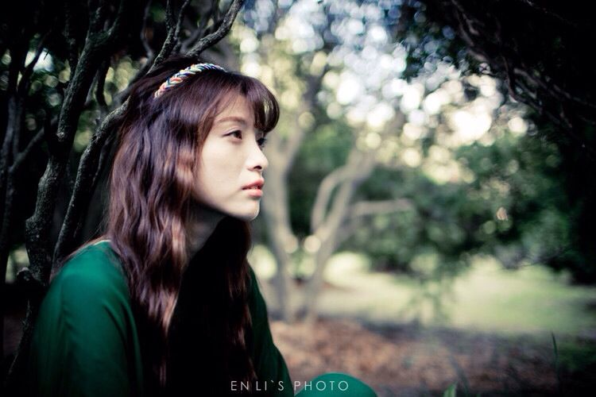

几乎每个人都将西藏列为一生必去的目的地之一，而很多早已去过的人，从此以后就一直走在“回”西藏的路上。全世界没有任何一个地方像西藏这样，如此炙手可热，又如此冰清玉洁，尽管抵达它非常困难，而且常常会受高原反应之苦。…
田园诗里描述美好的农村生活和自然风景，总是那么清新可爱。如果把田园风融入到摄影里，却也别有一番感觉。清新，自然风的人像，是很多热衷摄影的人最初会拍摄的，但是越是大众化的才是最难以超越的…

一开始就不要拍得太多：太多照片的最根本原因，就是我们拍摄得太多。认真看待每一次拍摄，仔细构图、小心对焦，这样会大大减少你浪费的时间，与其浪费太多时间在挑选相片，不如花时间在拍摄过程。
选择能反映你风格的照片选择照片也是摄影的一部份，两个不同的摄影师，可以拍出两组差不多的照片，但在挑选时却会得到截然不同的结果，而这种情况是正常的，也是不同摄影师的风格所在。所以最重要不是什么都选，而是从中慢慢建立个人风格。
删除差不多的照片：当有太多重复的照片时，你的系列照片就会失去冲击力，选择一张最能反映你风格的作品，比较各张的锐利度，及选择主体最有个性的照片等，以强制消除差不多的照片。